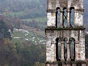

Travnik

Coloured Mosque, Travnik

St Luke's Tower, Jajce

Pliva Waterfall, Jajce
More photos of Central Bosnia in the
Bosnia and Herzegovina Galleries
Two Towns in Central Bosnia
The routes north from Sarajevo follow valleys between forested mountains. Two of these valleys are guarded by citadels, and the towns overlooked by these fortresses are worth a visit.
Travnik
The small town of Travnik is an enjoyable place to visit, as much for the atmosphere and surroundings as for its specific sights.
In the centre of the town is the Many-Coloured Mosque, so name for its external decoration which sets it apart from most mosques in the Balkans. There are a number of other attractive mosques around town, some elaborate vizier's tombs (turbe), and a picturesque cemetery through which a cobbled lane winds its way uphill. Any visit to Travnik should include a walk up to the castle, which is open to visitors - the entrance is across a high arched bridge. Beyond the castle, trails lead up to Vlašić, the mountain that towers over Travnik to the north. Also on the outskirts of town, but lower down, is Plava Voda, a recreation area beside a mountain stream. It's a nice spot for a rest, if a little too developed for my taste.
Someone has provided helpful information boards for visitors near Travnik's sites of interest, and in general the town struck me as a welcoming and lively place.
Travnik was the birthplace of the writer Ivo Andrić, and the setting for his novel The Travnik Chronicles. For some reason this book has been translated under various English titles - I have also seen the names Bosnian Chronicle and The Days of the Consuls. The latter title refers to the era when Ottoman viziers ruled Bosnia from Travnik and many foreign powers had consulates here.
Jajce
Like Travnik, Jajce is a valley town watched over by a fortress. In this case the fort is on top of a small conical hill in the middle of the valley, and the old part of Jajce clusters around the hill. The most striking building is the tall campanile of St Luke - the adjoining church of St Mary is in ruins. I couldn't find a way to get into the hilltop castle, but I'm told that it is now open for visitors.
Jajce's most famous sight is the Pliva Waterfall just below the old town, where the Pliva plunges into the Vrbas River. It's notable more for the volume of water than for its modest height of 27 metres - a pleasant spot but not necessarily worth a journey in itself, although many Yugoslavs of a certain age seem to recall childhood visits there with great nostalgia. Jajce is also known as the birthplace of Tito's Yugoslavia. Delegates from all over Yugoslavia attended an assembly of AVNOJ, the National Liberation Movement, in 1943. Not surprisingly, the building where they gathered has now fallen into disrepair.
I found the atmosphere of Jajce quite different from that of Travnik - literally as well as figuratively, as a nearby factory was pumping fumes into the air when I was there. One shouldn't read too much into a short visit, and my feelings were probably influenced by seeing Jajce under heavy grey skies and a steady drizzle, but the town seemed rather lifeless compared to the cheerful bustle of Travnik.
Practicalities
There are no trains to either Travnik or Jajce. Both are on a main route from Sarajevo to north-west Bosnia, so they are reasonably easy to reach by bus. The trip to Travnik takes less than two hours (11 per day), so it can be seen as a day trip from Sarajevo, although the town does have accommodation options if you want to stay. Jajce also has a few buses to Banja Luka (1.5 hours), a picturesque route along the Vrbas valley.